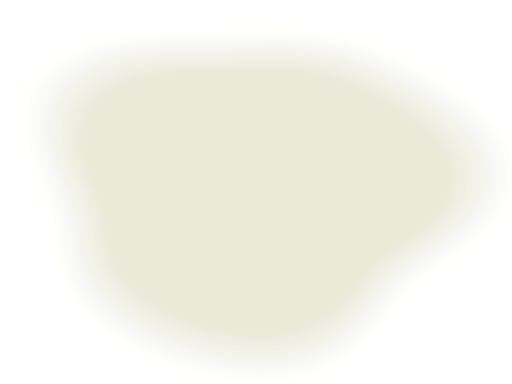
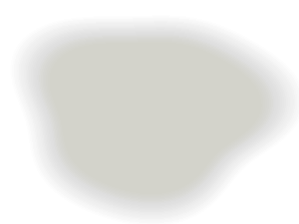
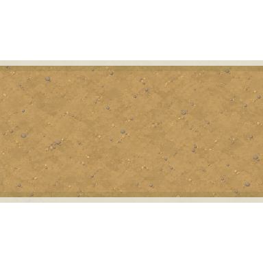
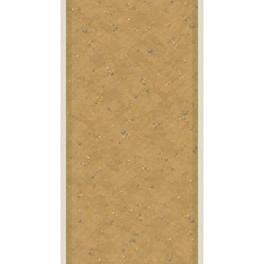
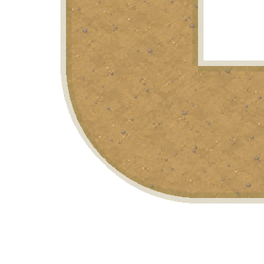
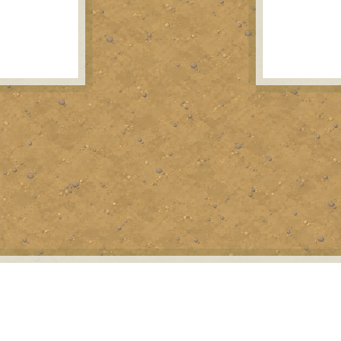
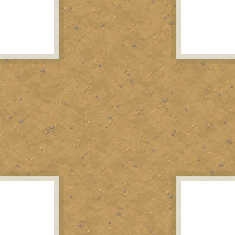
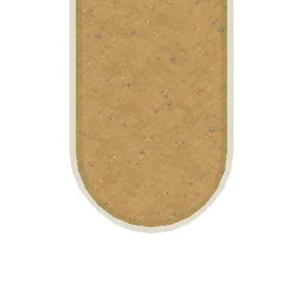

Спокойная зелень, светлые открытые участки и тёплые земляные тропинки.








Прямые участки, повороты и развилки соединяются общей шириной. Светлые и тёмные пятна травы размещаются отдельно и дают разнообразие без смены всей локации.
2 материала2 прозрачных перехода6 модулей дорог